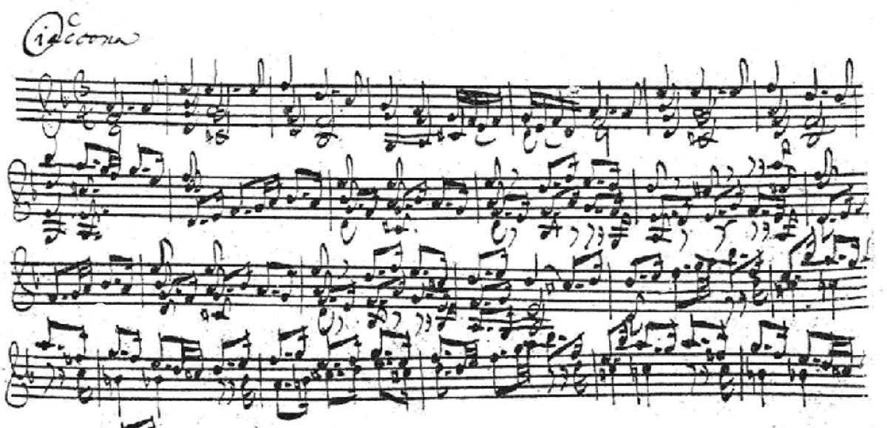

The death of Maria Barbara

In May of 1720 Bach left Cöthen in the traveling entourage of Prince Leopold, bound for Carlsbad, the fashionable Bohemian spa where minor German royalty went to take the waters and be seen taking them. It was the second such journey; the prince liked his music too much to leave it home, so a core of the Capelle went along, their Kapellmeister at its head. Maria Barbara Bach — thirty-five years old, thirteen years married, mother of seven children of whom four were living — was in ordinary health when the carriages rolled out. Nothing in any surviving record suggests the household felt anything but routine.
She died in early July, suddenly, of causes no document names. The Cöthen register records her burial on the seventh. Carlsbad lay a week's hard travel away across the Erzgebirge, and there was no way to reach a man in transit; the eighteenth century's news moved at the speed of hooves. So the burial went forward without him — summer made waiting impossible — and the funeral of Johann Sebastian Bach's wife took place with Johann Sebastian Bach absent and unaware, somewhere on the roads of Bohemia, presumably rehearsing the prince's evening music.
The scene of his return exists in one source only, and this timeline handles it the way it handles all such treasures: gratefully, and with the provenance showing. The Obituary of 1754 — the memorial biography written in large part by Carl Philipp Emanuel Bach, who was six years old in that house in that July — records that Bach came home to find his wife dead and buried, and that the first news of it met him at his own door. That doorstep detail is family memory, set down three decades later by a son shaping his father's story for posterity; no register can confirm a threshold or a sentence spoken on it. But the outline it dramatizes is documentary bedrock: he left with a living wife and returned to a grave already closing over its first summer.
He was thirty-five. The children were eleven, ten, six, and five — Catharina Dorothea, Wilhelm Friedemann of the notebook, Carl Philipp Emanuel the future memorialist, and little Johann Gottfried Bernhard. The household that had been a workshop, a school, and a marriage was now a widower with four children in a town where his only family was his employer. Seventeen months later he would marry again — Anna Magdalena Wilcke, the young court soprano — and the workshop would rebuild itself around a second remarkable woman. The gap between the two marriages is the loneliest stretch in the biography, and characteristically, it is also nearly the blankest in the record: no letters, no petitions, nothing but a strange autumn journey to Hamburg that looks, from this distance, very much like a man testing whether a different life might hurt less.
One artifact from the year of her death has gathered an entire tradition around itself. The autograph fair copy of the Sei Solo for unaccompanied violin is dated 1720, and its D-minor partita ends in the Chaconne — a quarter hour of variations over a repeating bass, the most monumental single movement ever written for an instrument alone, music that generations of violinists have found impossible to play as anything but mourning. The dating makes a memorial reading possible; nothing makes it certain, and some of the music surely predates that July. The timeline files the connection where it belongs, under tradition — irresistible, unprovable — and notes only this: whether or not the Chaconne is about Maria Barbara, it is the sound of everything her death required of the man who wrote it in the year he had to learn it.
Continue with the era essay: Cöthen — the instrumental golden age, or stay with her: Maria Barbara Bach.
Cöthen burial register, July 1720
The Obituary (Nekrolog), 1754 (New Bach Reader)
Wolff, The Learned Musician, ch. 7
→ full bibliography & links